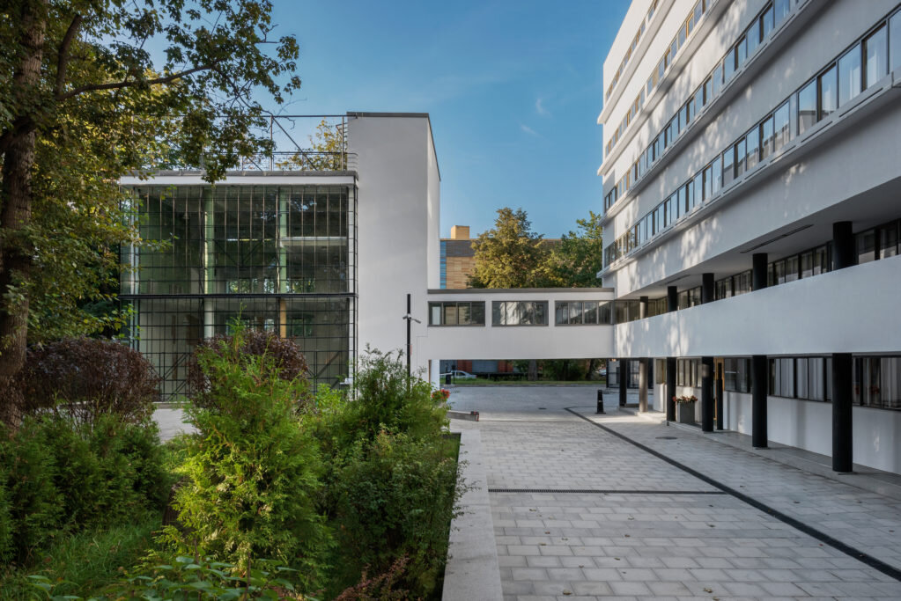

Дом Наркомфина
“Дом переходного типа” на Новинском бульваре появился в 1930 году как результат эксперимента архитекторов-конструктивистов Моисея Гинзбурга и Игнатия Милиниса.

TCP/IP
сетевая модель передачи данных, представленных в цифровом виде